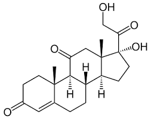
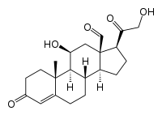
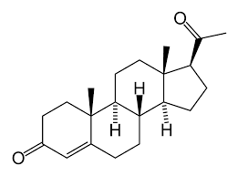
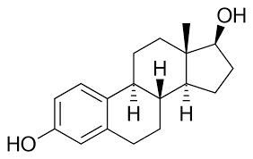
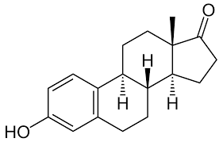

Steroidi OVDE
Zucne kiseline OVDE
Vitamini OVDE
Veliki broj razlicitih hormona u ljudoskom organizmu ima steroidne strukture. Svi oni nastaju iz holesterola. Na osnovu strukture i bioloske funkcije; sterodidni hormoni se mogu podeliti na:
U kori nadbubrezne zlezde se sintetisu dva hemijska srodna, ali funkcionalno razlicita tipa hormona: glukokortikoidi i mineralkortikoidi. Glukokortikoidi ucestvuju u regulaciji metabolizma proteina, ugljenih hidrata i nukleinskih kiselina. Najznacajniji glukokortikoid je kortizon. Najznacajniji predstavnik drugog tipa je aldosterol, koji, delujuci na funkciju bubrega, stimulise resorpciju natrijumovih i hloridnih jona, odnosno sekreciju jona kalijuma.
 -struktura kortizona i aldosterola-
Ovi hormoni nastaju u zutom telu jajnika i posteljici, a osnovna uloga im je priprema sluzokoze materice za smestaj oplodjene jajne celije, osnosno odrzavanje trudnoce. Najpoznatiji hormon iz ove grupe je progsteron.
-struktura proegsterona-
Musko polni hormoni se sintetisu u testisima, jajnicima (kod zena, ali u maloj meri), nadbubrznoj zlezdi, kao u nekim limfnim zlezdama. Nazivaju se androgeni hormoni, jer su svi derivati andosterona, koji je prvi izolovan i okarakterisan hormon iz ove grupe jedinjenja. Androgeni hormoni stimulisu i odrzavaju muske sekundarne polne karakteristike. Osim toga, aktiviraju biosintezu proteina, sto se naziva anabolicko delovanje. Androgeni, kao i sinteticki preparati se anabolickim delovanjem nazivaju anabolici. Koriste se u stocarstvu za povecanje misicne mase, ali je njihova upotreba u tu svrhu zabranjena jer je naknadno utvrdjeno da duza primena izaziva niz stetnih egekata u organizmu. Najvazniji androgeni hormon je testosteron.
-struktura testosterona-
Zenski polni hormoni se unekoliko razlikuju od ostalih steroida jer sadrze aromatican A prsten. Nazivaju se jos i estrogeni hormoni. Intenzivno se sintetisu u celijama jajnika i odgovorni su za razvoj i odrzavanje sekundarnih polnih karakteristika, kao i za odrzavanje trudnoce. Trebalo bi naglasiti da estrogeni nisu iskljucivo zenski hormoni. Oni se sintetisu i u organizmu muskaraca, mada u mnogo manjoj meri. Estrogeni hormoni predstavljaju jedan od faktora koji omugacava normalnu cirkulaciju krvi zahvaljujuci njihovom vazodilatorskom efektu (sirenje krvnih sudova). Pored toga uticu na smanjenje koncentracije lipida u krvi, a odgovorni su i za odrzavanje natrijuma, kalcijuma i fosfora u organima. Najzpoznatiji predstavnici ove grupe steroidnih hormona su estron i estradiol.
 -strukture estradiola i estrona (redom)